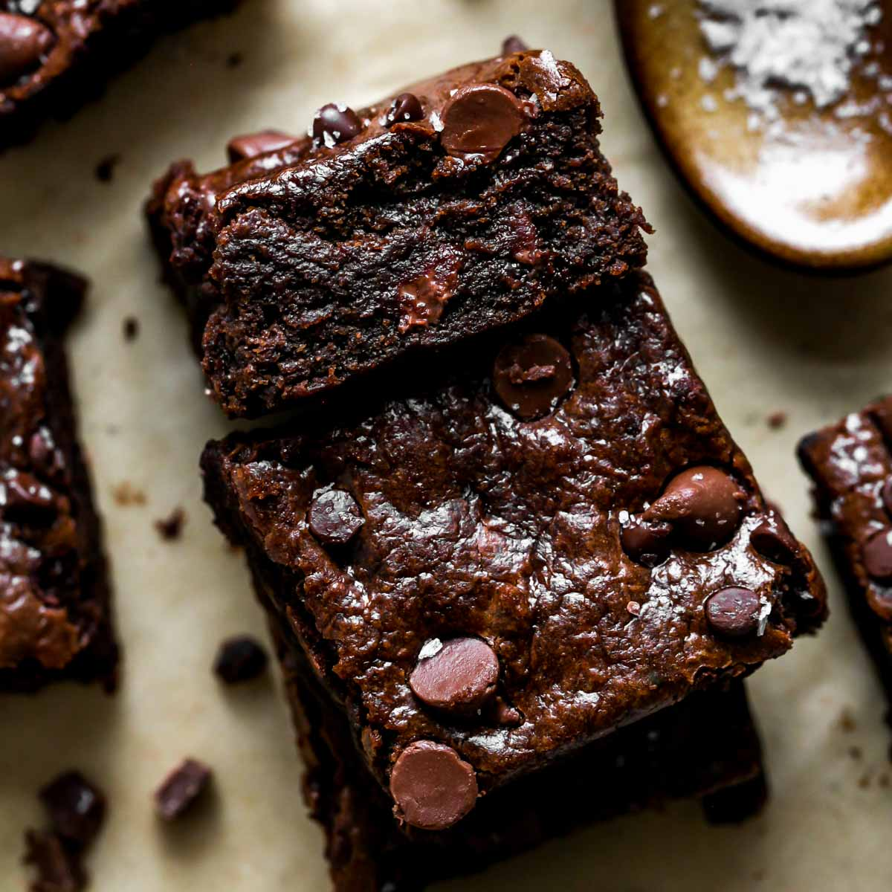

Brownies

Description
Brownies is a desert that is delicious and everybody loves.
It's simple to make and bake.
Ingredients
- 2 Eggs
- Water
- Powdered Sugar
- Unsweeted Coco Powder
- Oil
- Vanilla Extract
Steps
- Mix Ingredients
- Put it in the oven & Bake
- Let it Bake at 350 for 25 to 30 minutes
- When done, Let it sit for 15
- Enjoy